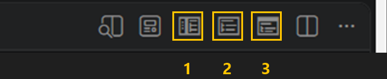
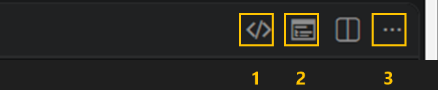
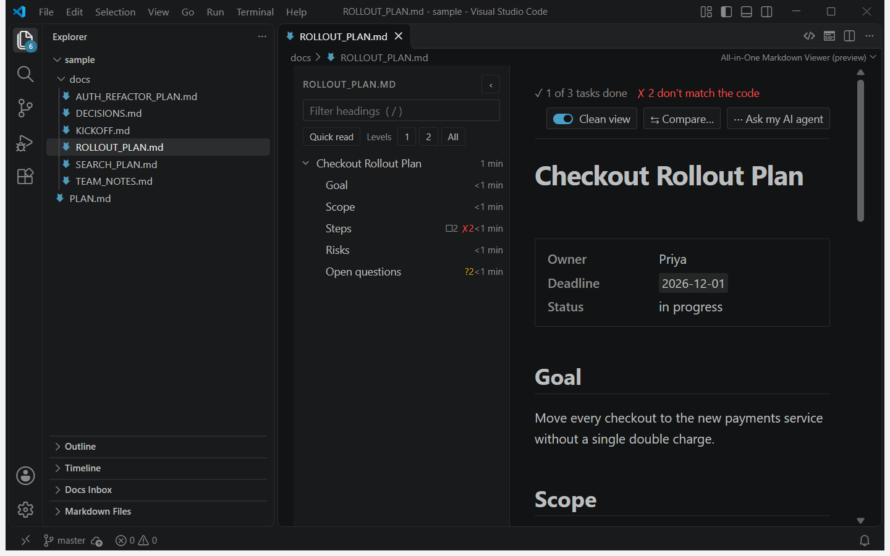

Shows your Markdown file as a readable page, in the same tab, with a clickable outline on the left.
Helps: anyone who has to read a Markdown file, written by a person or by an AI.
Where to find it
Keyboard: Ctrl+Alt+V (Mac: Cmd+Alt+V). Press it again to go back to the text.
Button: top right of the editor, button 2 below (Show Preview). On the page, button 1 (</> Show Source) takes you back.
Command Palette: All-in-One Markdown Viewer: Show Preview (in This Tab) / Show Source (in This Tab)

Seeing the text: 1 = beside it, 2 = Show Preview, 3 = in your browser.

Seeing the page: 1 = Show Source, 2 = in your browser, 3 = the … menu (Reading Look, Export).
Try it
Open any .md file in VS Code.
Press Ctrl+Alt+V.
Click a heading in the outline on the left to jump to it. Press Ctrl+Alt+V again to edit.
What you should see

The same tab now shows a page. The bar at the top sums up the doc (“1 of 3 tasks done”, “2 don't match the code”).More detail
The page updates as you type. To open every Markdown file as a page straight away, use VS Code's Reopen Editor With… → Configure default editor for '*.md' → All-in-One Markdown Viewer (preview). The key can be changed in VS Code's Keyboard Shortcuts (search docmap.openMapHere).
An outline of every heading, a filter, “quick read” and heading levels, so a 40-page doc takes minutes.
Helps: anyone reviewing long specs, plans or AI output.
Where to find it
On the page: the outline panel on the left, with Filter headings, Quick read and Levels 1 2 All.
Keys on the page: s quick read · 123 heading levels, 0 all · / filter the outline · j / k next / previous heading · Esc clear the filter · Ctrl+F search the text.
Try it
Open a long doc's page (card 1).
Click Quick read (or press s): each section shows only its first paragraph.
Type / and a word to keep only the matching headings in the outline.
What you should see
Each heading shows its reading time. Small badges show open tasks, questions and doubtful paragraphs in that section.More detail
The heading you are reading is highlighted in the outline. Fold parts of the outline with the arrows.
Resize the outline by dragging its edge; drag it fully left, or click ‹, to hide it. Your choice is remembered.
When you open a file's page again, even after restarting VS Code, it goes back to the section you were reading (setting docmap.rememberPlace; only the heading is stored).
Lines that act as headings (a line of only bold text, or 2.1 Title) are added to the outline in italics (setting docmap.inferHeadings).
Turn all reading tools off with the setting docmap.readingTools.
- **Owner:** Priya
- **Status:** in progress
Note: the old API stays on until every client has moved.
Step 1: Turn on shadow mode.
Step 2: Compare results for a week.
Press Ctrl+Alt+V.
Look at the owner card, the note box and the numbered steps.
What you should see
Bullets become a card, “Note:” a box, steps a numbered list, statuses coloured labels, and the checklist gets a progress bar.More detail
Clean view also shows front matter as a header card, adds colours to code, and lets you zoom images. The layout never changes the file.
Opens the page in your web browser. It follows your edits as you type in VS Code and keeps your place.
Helps: reading on a second screen, or showing a doc on a call.
Where to find it
Button: top right of the editor, button 3 on the text, or button 2 on the page (pictures in card 1).
Command Palette: All-in-One Markdown Viewer: Open Preview in Browser
Plans Dashboard: the 🌐 beside each plan.
Try it
Open any .md file.
Click Open Preview in Browser.
Type in VS Code: the browser page changes with you.
What you should see
Your browser opens the same page, with the outline. The address starts with http://127.0.0.1: it is served only to your own computer, behind a private link, and stops updating when VS Code closes.
More detail
Prefer a saved copy instead of a live page? Turn off the setting docmap.liveBrowser; press the button again to refresh the copy. Only one browser view exists at a time, so nothing piles up on your disk. In the browser, Ctrl+B hides or shows the outline.
Save the page as one HTML file anyone can open, or print it to PDF.
Helps: sending a doc to someone who doesn't use VS Code.
Where to find it
The … menu at the top right of the editor → Export as HTML… or Export as PDF (Print)…
Command Palette: All-in-One Markdown Viewer: Export as HTML… / Export as PDF (Print)…
Try it
Open a doc.
Click … → Export as HTML…
Choose where to save it, then open the file by double-clicking it.
What you should see
HTML: one self-contained file that looks like the page. PDF: the page opens in your browser with its print window; choose Save as PDF. It prints dark text on white, whatever theme you read in.